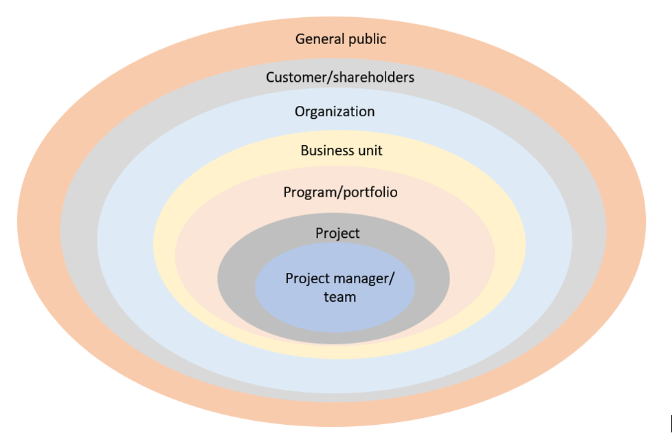

3
Appendix C - Project Recovery
We can’t solve our problems with the same level of thinking that created them.
—Albert Einstein (1946)

Objectives
After reading this appendix, you will be able to
- Identify problems affecting troubled projects
- Discuss issues related to cognitive biases and other issues that prevent a clear understanding of project problems
- Explain techniques for assessing options and developing a rescue plan
The Big Ideas in This Appendix
- It’s rare that a single, easy-to-identify cause sends a project off the rails. Usually multiple problems work together to sabotage a project.
- You can’t pull a troubled project back from the brink until you fully understand how it got there in the first place.
- Getting a project back on track and avoiding new problems requires a recovery plan with detailed requirements and a clear definition of success—along with established acceptance criteria for the newly established project deliverables.
C.1 Identifying a Troubled Project
Even the most-successful project managers have likely worked on projects that seemed to spiral out of control on their watch. Or they may have been asked to step in and take over a project already teetering on the brink of failure. In hindsight, the signs of trouble on those projects and the actions required to save them may seem obvious, but recognizing that a project is in trouble and making a commitment to get it back on track can be difficult first steps.
Project management literature has much to say about rescuing a troubled project. The focus is often on the importance of identifying the root cause of a problem on a project—as if the solution lies in simply getting to the bottom of a problem that just needs to be “fixed.” The reality is typically much more complex, with gradations of trouble on an at-risk project ranging from issues caused by a single, major variable—such as the loss of a key team member or a sudden increase in the price of fuel oil—to problems resulting from the interactions of many different variables inside and outside the project.
Those variables can interact in countless ways depending on the nature of the project, the project team, the stakeholders, the organization, and the overall environment in which the project is taking place. For instance, a project could be at risk because key project stakeholders are no longer engaged, causing the project team to drift away from their focus on delivering value to the customer. That drift could then result in scope creep, which, in turn, leads to cost and schedule overruns that can no longer be absorbed by project reserves. Poor communication from the project manager could be exacerbating those problems, as could the failure of the customer and project team to have clearly defined success at the start of the project.
Sometimes the problem lies in the interaction of factors that, on their own, would be benign. For example, you might successfully hire a vendor to create a deliverable using their proprietary technology. Or, instead, you might choose to do it in-house, using your own technology so you can be sure you understand the process and the outcome. Either option could be fine. But hiring a vendor to use your technology, which they don’t understand, could spell disaster.
The multitude of project variables, along with the complexity of their interactions, can make it very difficult to understand the full extent of the problems on a project—much less the best approach for getting the project back on track. But if you are blinded by cognitive biases, fully understanding the situation is nearly impossible.
Avoiding Cognitive Biases
You’ve already seen in earlier lessons how cognitive biases—or errors in thinking—can prevent people from clearly understanding project risks. For instance, confirmation bias—the tendency to pay attention only to information that confirms your preconceptions—can contribute to an illusion of control, making a team believe a project is going well even when it isn’t (Virine, Trumper and Virine 2018). A project manager trying to both manage and champion a project—or a team vested in a particular approach—may not see that their project is in trouble. Even if they can perceive trouble, confirmation bias may trick them into thinking things will get better without the need to upend the existing project. Meanwhile, the planning fallacy contributes to a delusional sense of optimism, causing everyone to believe everything is fine, when in fact the project is spinning out of control. Other cognitive biases, such as conservatism (weighting evidence you are already familiar with more heavily than new evidence) and groupthink (adopting a belief because a significant number of people already hold that belief), can limit your imagination, preventing you from foreseeing how something that seems minor now could turn out to be a serious problem. Cognitive biases can also prevent you from recognizing that a series of apparently unrelated problems could, collectively, point to a project in serious jeopardy.
As a project manager, you’ll need to beware of biases, your own as well as those of the people who are providing you information about the project. Daniel Kahneman, a Nobel Prize winner for his groundbreaking work on cognitive biases, has shown that one of the most effective ways to counter the effects of cognitive biases is reference class forecasting, a method of predicting outcomes by setting aside the outcome you and your team predict and instead analyzing the actual outcomes of similar projects. Also known as taking an outside view, this form of forecasting outcomes “requires planners to identify a reference class of analogous past initiatives, determine the distribution of outcomes for those initiatives, and place the project at hand at an appropriate point along that distribution” (Lovallo and Kahneman, 2003). Selecting the right reference class—that is, the right group of relevant projects—requires the project leader to weigh many variables, but ultimately comes down to a judgment call.
If you’re a manager at a chemical company considering building an olefin plant incorporating a new processing technology, you may instinctively think that your reference class would include olefin plants now in operation. But you may actually get better results by looking at other chemical plants built with new processing technologies. The plant’s outcome, in other words, may be more influenced by the newness of its technology than by what it produces. The key is to choose a class that is meaningful but narrow enough to be truly comparable to the project at hand. (Lovallo and Kahneman, 2003)
Recognizing the power of cognitive biases and using reference-class forecasting to combat their effects will help you and your team gain a true understanding of a troubled project. Terry Little, an innovative U.S. Air Force program manager who built a career around rescuing failing projects, learned early on that true understanding was a necessary precondition to success. He described his first steps in reviving a stalled cruise-missile program like this:
I started collecting some information about the status of the program. It became apparent that the…team did not grasp the extent of the dissatisfaction with their achievements. As in other times throughout my career, I realized that my first challenge would be to change the way in which the team perceived reality. (Laufer, 2012, 21)
That’s not a small thing—changing how a group of people perceives reality. But it’s the first and most important job of a leader charged with pulling a troubled project back from the brink of failure.
Failing to Recognize Failure
An extreme example of the dangers posed by cognitive biases like confirmation bias and groupthink can be found in the 2018 collapse of a pedestrian bridge on the Miami campus of Florida International University. The bridge, which spanned an eight-lane road, collapsed while still under construction, killing six people. According to National Transportation Safety Board (NTSB) Chairman Robert Sumwalt, “Errors in bridge design, inadequate peer review, and poor engineering judgment led to the collapse of this bridge…The failure of all concerned parties to recognize and take action on the threat to public safety presented by the significant observed bridge structure distress prior to the collapse, led to the tragic loss of life in this preventable accident.” As Sumwalt explained, in the weeks leading up to its collapse, the bridge was essentially “screaming at everyone that it was failing,” yet no one on the project seemed willing to recognize the extent to which the project was in trouble (NTSB 2019).
For more information about the Florida International University pedestrian bridge collapse, including an animation of the sequence of events leading up to the collapse, watch this six-minute video created by the NTSB:
Spotting Signs of Trouble
Although problems on failed projects are often glaringly obvious in hindsight, “sometimes when you are inside a project—and you’re managing it day to day—it becomes very difficult to see what is actually happening. You’re too close to the detail” (Harrin n.d.). To ensure you’re not blinded by the day-to-day rush of detail, it can be helpful to stop every now and then and compare your project to a list of known types of problems that often indicate a project is in need of rescue:
- The project is significantly over budget, with little chance of getting it back on track.
- The project team is regularly missing basic performance metrics or major deadlines/milestones.
- The scope of the project keeps changing.
- No one is really able to explain what you are trying to deliver on the project, and there are ongoing disagreements between stakeholders about the project’s requirements and goals.
- Team morale is low, team members seem disconnected, and turnover on the project team is increasing (Warcholinski n.d.).
- Key stakeholders are no longer engaged; they have stopped attending meetings, and they provide limited feedback when asked to participate in decision making.
- The number of change orders has been increasing, and the customer has disputed several project invoices in recent weeks (Seador 2019).
- Team members and other resources are being pulled off the project by upper management.
- Project technology is not working.
- The wrong people are in the wrong roles, preventing them from executing the project successfully.
- Your informed intuition tells you something is off on the project even though you have yet to identify a problem.
Every experienced project manager typically has their own set of warning signs, and over time, you’ll likely develop your own. One way to get a better sense of the most telling warning signs in your organization is the managing by walking around (MBWA) management style you learned about in Lesson 11. Becoming a regular practitioner of MBWA will increase the odds that you’ll spot a warning sign while you still have time to act. Spontaneous conversations with team members and informal reviews of ongoing work can uncover issues requiring immediate action or further investigation.
Of course, the mere existence of warning signs does not necessarily mean a project is in peril. What really spells trouble is the persistence of issues that seem to have no clear resolution and that contribute to “an overall growing sense of unease.” According to Matt Warcholinski, trouble spots in a project do not doom it to failure, as long as you use the problems to “analyze why the project is failing” and then figure out what to do about them (Warcholinski, n.d.). In other words, once you identify problems, you have to make sure you really understand them.
C.2 Understanding the Problem
What does it mean to understand a problem? First and foremost, you need to see it in context.
Seeing the Layers of Context
As you learned in Lesson 1, a project’s context consists of the day-to-day environment and the larger organizational background in which the project unfolds. Figure C-1 shows the many layers of context that can enfold a single project.

Clearly, then, identifying a problem is only the beginning. You can’t really understand it until you understand the extent to which the problem is impacting the project team, the project itself, the program or portfolio, the business unit, the organization, the customer, shareholders, and even the general public. A project leader who attempts to “solve” problems without looking at this big picture is like a park ranger intent on stamping out a single spark while a forest fire rages in the background.
Context is especially important when dealing with problematic team dynamics. Team tensions can cause communication problems between the project manager and team and among team members, with those problems then radiating outwards, leading to rework, missed milestones, and cost overruns. In turn, those issues can lead to resentment and team dysfunction—all of which could put the project (or even an entire program or portfolio of projects) at risk.
An example of trouble radiating outward from a project occurred at Revlon, which acquired a new company, Elizabeth Arden, and then barreled ahead with integrating the new company’s system into its own ERP in one fell swoop, rather than rolling out changes incrementally, allowing employees to learn the new system step-by-step. Doing everything at once made it impossible to identify individual problems as they arose. Worse, it appears the company failed to formulate any kind of serious risk management strategy to deal with the cascading problems that did arise. Almost immediately, one of Revlon’s North Carolina plants experienced shipping delays. Revlon eventually lost almost $64 million in sales and was sued by its own shareholders (Techliance, n.d. and Dolfing 2019). One of several lawsuits alleged, among other things, that the company “failed to design, implement and consistently operate effective process-level controls” on the project (Saran 2019).
Trouble on a complex engineering project can put more than the organization at risk, particularly if the trouble takes the form of technical failures and flawed deliverables. The impact of this type of trouble, which can often be traced back to failures in project leadership, can easily extend beyond the project and the organization to the customer and even the general public—as evident in the collapse of the Florida International University pedestrian bridge.
Identifying the Root Cause
Once you have a good understanding of a troubled project’s context, you can look for the root cause of the project’s problems. In this stage, your goal isn’t to “fix” the project by fixing the root cause of its problems—usually an impossible goal—but rather to gain a deeper understanding of the project you are trying to rescue. Without that understanding, you can easily fall into the trap of trying to solve the wrong problem.
As organizational theorist Russell L. Ackoff described the challenge: “We fail more often because we solve the wrong problem than because we get the wrong solution to the right problem” (1974, 8). Solving the right problem requires you and your team to ask critical questions to get to the root cause of the problems you are facing.
The American Society for Quality (ASQ) defines a root cause as “the core issue—the highest-level cause—that sets in motion the entire cause-and-effect reaction that ultimately leads to the problem(s).” A root cause analysis is “a collective term that describes a wide range of approaches, tools, and techniques used to uncover causes of problems.” (n.d.)
Root Cause Analysis Tools
The American Society for Quality (ASQ) identifies three primary tools for conducting root cause analysis: fishbone/Ishikawa diagrams, Pareto charts, and scatter diagrams. For more on these tools, along with links to additional resources related to root cause analysis, see the “Cause Analysis Tools” page on the ASQ website: https://asq.org/quality-resources/root-cause-analysis/tools.
In Rescue the Problem Project, Todd C. Williams discusses the importance of conducting root cause analysis early in the efforts to recover a failing project:
“Although determining root causes up front takes more time and requires making tough decisions early, in the end it requires less management and increases the odds of a successful recovery…. When all root causes are uncovered, the recovery manager can best determine and document the corrective actions needed to fix those issues. In addition, he or she assembles the recovery plan, with multiple alternatives, to complete the newly redefined project. The plan’s goal is to fix the issues at their root cause and then, after arriving at a compromise on the new scope, schedule, and budget, to deliver the product.” (9-10)
John Nelson recommends taking the long view when it comes to looking for root causes on failing projects:
When I’m asked to help revive a troubled construction project, I find it’s helpful to ask, “What happened 1,000 days ago?” The precipitating event usually took place then—roughly three years before. Of course different industries require you to use different time frames. But the point is that the root cause of potential project failure usually lies further back in time than an inexperienced engineer might think.
And often the root cause doesn’t have anything to do with engineering. Politics, for instance, can throw a project into disarray. Sometimes people can’t agree on how to proceed, and the ongoing disputes finally exhaust everyone. In the end, they agree on something, anything, just because they have to end the process, not because it’s the best approach. It’s only later that the repercussions of those decisions become evident. The repercussions might appear to be engineering problems when they are actually problems caused by people who couldn’t come to an agreement—for example, suppose a public park floods every spring, leading people to think the park designers did something wrong, when in fact the root cause was a dispute in the parks department that prevented an optimal site selection in the first place.” (2020)
Engaging the Project Team and Other Stakeholders
Gaining a clear understanding of the problems you are trying to solve is impossible without engaging with the project team and other stakeholders to get their take on the project’s context and the root causes of its problems. This early engagement is also an essential first step in getting everyone onboard with the changes required to implement a solution, thus increasing your chances of eventual success. As Moira Alexander notes in an article for TechRepublic, ”When a team is able to have an impact on the decision or solution, it enables them to get past the fear so they can utilize their energy in tackling the issue faster“ (Alexander 2019).
Keep in mind that engaging with the team and stakeholders doesn’t mean simply presenting a list of problems you’ve already identified. Instead, ask key people to work with you to generate alternative explanations for the project’s challenges. This will help you overcome your own confirmation bias, making it more likely you’ll identify the critical issues—and, ultimately, the optimal response. (Larson and Gray, 2011, 393). Establishing a “no fault” culture as you start this work will help the team more quickly identify problems and foster collaboration as you move on to developing solutions (Lloyd-Walker, Mills and Walker 2014).
C.3 Assessing Options and Developing a Plan
With a solid understanding of the project’s problems in hand, you’ll need to consider the options for moving forward. As discussed in Lesson 13, sometimes the best choice for the organization is to shut down a troubled project. Termination may be the only option for projects that are troubled due to externalities such as a new import quota that makes it impossible to acquire a required resource or the release of a new technology by a competitor or regulatory changes mid-project that would require significant and costly rework. Certain internal factors, such as a change in organizational strategy, may also be enough to tip the scales in favor of project termination.
In many cases, however, a project in trouble can—and should—be brought under control and rescued from failure. According to Matt Warcholinski, you should move forward with a rescue “when you can extract tradeoffs out of project constraints, and still achieve the result” required by the organization (n.d.). If you have determined that a troubled project still has value for the organization, the next step may be convincing key stakeholders to recommit to the project by clearly articulating the project’s benefits and then developing a plan that will rescue it from failure.
As you develop the plan, consider the value of specific activities so you can identify what you need to stop doing before restarting the project. Doing this frees up resources and gets the team focused on what matters. Be on the lookout for proposed solutions that simply pile on more work and tasks. An example of this is the imposition of more tracking and monitoring to ensure a specific issue does not occur again. While that work may be necessary, make sure it adds value before adding it to the recovery plan. Also beware supposed silver bullets. As noted earlier this appendix, it’s unlikely that a single event or problem pushed the project to the brink of failure. “More often than not, it is a complex entwined set of problems that combine and collectively result in failure” (McGrath and Martin, n.d.). The proposed recovery plan needs to account for that.
Scenario Planning
If significant scope change is being considered, scenario planning (sometimes referred to as “what-if analysis”) with stakeholders can help clarify expectations and avoid unintended consequences. This is particularly important if changes must be made rapidly, under pressure. Running likely outcome scenarios for a range of options (do nothing, implement one or more corrective actions, terminate the project, etc.), with risk probability attached to each, can help you move beyond addressing the symptoms to assessing the implications of the changes being considered.
Scenario planning starts from the premise that the future will not look like the present and can range from “a simple evaluation of the effects of changing the duration of one or more activities to more complex analysis like introducing duration uncertainty, running a project forecast based on performance-to-date” or conducting a schedule and cost risk analysis that takes into account identified project and enterprise risks (Røberg 2017). Assessing the risks and benefits for each of the options before finalizing a recovery plan can be critical to getting a project back on track. Scenario planning can seem like a luxury when a project is failing, but rushing to a decision on the best way to rescue a project in trouble can ultimately make things worse if the project team and stakeholders don’t fully consider the potential impacts and risks of the proposed solutions.
Establishing a Red Team
To combat groupthink and other biases at this critical stage, consider creating an outside red team to assist the project recovery team. As described by Bryce Hoffman in his book Red Teaming, the role of a red team is to “counter ideas and decisions, whether or not they seem correct, with alternative views” (TechTarget 2017). A red team approach helps ensure the recovery team is “taking a hard look at assumptions, examining the ways in which plans could fail, and carefully considering alternative explanations and perspectives” while considering possible scenarios and formulating a rescue plan (Hoffman 2017). You may be able to gain similar benefits working within the recovery team by designating someone to serve as a devil’s advocate, with the goal of encouraging team members to “consider other angles of a problem, to think more deeply about their own views, and perhaps to be stimulated to explore solutions they would not have considered before” (Business News Daily 2020).
Keep in mind, though, that these approaches can only succeed in a strongly collaborative culture, with teammates who trust each other. A confident, flexible team can stand up to the serious critiques offered by a red team or a devil’s advocate and work together to make things better. By contrast, a team made up of know-it-alls who insist on retaining control over every detail is rarely adaptable enough to profit from these approaches. In that case, you might have to step back and decide if you have the right people in the right roles, making changes as necessary before you proceed.
Tiger Teams
More complex, high-priority troubled projects may benefit from a tiger team—an approach that originated with the military and NASA, which famously used a tiger team to safely return the crew of the Apollo 13 lunar mission to earth after the explosion of two oxygen tanks damaged the spacecraft.
A tiger team is typically a small, agile team of cross-functional experts formed to “focus on important, high-profile, high-impact, mission-critical projects.“ The cross-functional expertise of the group allows the tiger team to approach problems on a troubled project from multiple perspectives, making it easier for them to identify and focus on the most critical issues (Lucidchart n.d.).
To learn more about tiger teams, read the article “Understanding the Tiger Team Approach” on the Lucidchart website: https://www.lucidchart.com/blog/what-is-a-tiger-team.
Getting Stakeholder Buy-In
Introducing significant changes on a troubled project requires stakeholder agreement, which you negotiate to achieve (Williams 2011, 185). One likely topic of negotiation at this stage is project scope, including both the deliverables that will be included in the revised project scope and the deliverables that need to be dropped from the project to get things back on track. Other items that may need to be negotiated include a revised budget and schedule, the establishment of new work processes, and decisions about whether to replace a technology or vendor. In the context of a developing a recovery plan, the principled negotiation approach discussed in Lesson 12 can help ease tensions and keep all parties focused on interests—rather than positions—which can be evaluated based on objective standards. Throughout the negotiations, you’ll need to make use of your communication and persuasion skills, as well as your emotional intelligence, to arrive at the optimal solution and get the buy-in necessary to move the project forward.
Developing the Optimal Solution Using the Cynefin Framework
A project at risk of failing has been shaped by the realities of living order. Traditional, geometric order approaches to problem solving may not be enough to get such a project back on track. In Lesson 3 you read about the Cynefin® (pronounced kuh-nev-in) decision-making framework, whose name comes from a Welsh word signifying “the multiple factors in our environment and our experience that influence us in ways we can never understand” (Snowden and Boone 2007). This living order tool offers a flexible approach to understanding the problems on a troubled project and determining the best path forward. Dave Snowden, the creator of the framework, describes it as a “sense-making framework”—a way of looking at reality to identify the type of system in which you are operating in order to understand how you can gain knowledge and determine how you should act (2018).
The Cynefin framework divides system types into five domains:
- Obvious/Clear—Everyone can easily see the relationship between cause and effect, and no one disputes it.
- Complicated—A relationship between cause and effect exists, but it is not self-evident to the decision makers.
- Complex—There is no linear relationship between cause and effect. You determine the correct solution by probing emerging patterns—that is, testing ideas for action through experiments (2018).
- Chaotic—No patterns or constraints exist. Chaotic situations are, according to Snowden, fairly rare (Snowden and Boone 2007).
- Disorder—This is the “state of not knowing what type of system you are in…It’s not the same as a chaotic system…. it may be ordered; you just don’t realize it” (2018).
The Cynefin framework helps you ensure your recovery plan is appropriate to the context or domain in which you are working by providing you information about the types of constraints you are likely dealing with, the most appropriate decision model for your situation, and the types of practices you should apply to resolve the problems.
For more information on the Cynefin framework, you can visit the website of Dave Snowden’s company, The Cognitive Edge (https://www.cognitive-edge.com), or start with this eight-minute video in which Snowden introduces the framework and explains its architecture and function: https://www.youtube.com/watch?feature=youtu.be&v=N7oz366X0-8&app=desktop.
C.4 Finalizing the Recovery Plan
As Todd C. Williams observes in Rescue the Problem Project, “At the core of project recovery is change….Without change, the project will continue to fail.” (2011, 185). Generating the necessary level of change requires a detailed recovery plan, which “is necessarily different from the existing project plan” (10). According to Williams, the recovery plan will “define the areas to fix and recommend changes in the project and product to achieve the desired result,” and should include the following (82, 184):
- The actions already taken
- An enumeration of the deviations from the contract
- Changes to the scope, schedule, and budget
- Financial considerations
- Corrective actions to root causes
- A formal project plan
- High-level schedule
In short, getting the project back on track and avoiding new issues requires a recovery plan with detailed requirements and a clear definition of success—along with established acceptance criteria for the newly established project deliverables. You’ll also need to establish new timelines and budgets, prioritize what to tackle first, reassign or add resources, and communicate new work processes and expectations to the team.
To ensure you create a comprehensive recovery plan, Robert Merrill, a Senior Business Analyst at the University of Wisconsin-Madison, suggests approaching the task as “blank-sheet planning.” As Merrill explains, “You essentially have a new project (including cleaning up the mess left by the old one).” Because you have the benefit of starting with much more knowledge than you had at the start of the original project, however, you will be in a better position to avoid creating yet another troubled project (pers. comm., 3/28/2020).
Even with a blank-sheet planning approach to creating a recovery plan, you will need to make use of many of the original project documents. Documents such as the business case, the contract or statement of work, the project charter, and the project scope statement can offer some much-needed perspective and guidance about the core value the original project was intended to produce, even if those documents need to be revised as part of the recovery plan.
For a more complete discussion of the documentation review required when developing a recovery plan, read this white paper from Surge ERP Consulting, which advocates including a documentation review with key stakeholders and project team members as a first step in a project rescue: http://surge-erp.ca/wp-content/uploads/2016/01/Rescuing_a_Troubled_Project-20160115-FINAL.pdf.
C.5 Implementing the Plan
The details of your recovery plan and how you roll it out will vary considerably depending on the project, your organization, and the industry in which you are working. But no matter what the project, you’ll need to keep an eye out for old problems that resurface and new ones that may be caused by the “solution.” Behavioral issues may reoccur, and some problems, such as unresponsive stakeholders or a troubled technology, may be difficult or impossible to fix (Williams, 2011, 216). You may find that some stakeholders try retain the old scope because they are vested in it and are deluded by the sunk-cost fallacy into thinking that just because they’ve already invested heavily in a particular approach, they should keep investing in it heavily no matter what. Implementing a recovery plan sometimes requires the project manager to be absolutely definitive about killing off the old approach—while at the same time enthusiastically championing the new approach.
The Cynefin framework reminds us that being complacent about initial successes as you begin the process of recovery could cause the entire project to collapse into chaos (Snowden and Boone, 2007). No matter how detailed the plan and how engaged the project team and key stakeholders were in developing the recovery plan, new issues will emerge as the plan is executed. To keep the recovery on track, you’ll need a change management strategy as well as a focus on risk management.
Along with completing technical project management tasks in the implementation stage, you’ll have work to do rebuilding stakeholder trust and team morale. Recall from Lesson 1 that part of working in living order is ensuring the project team members and other stakeholders understand a project’s value and are committed to delivering it. That is even more true as you begin to implement your recovery plan.
Now is the time to stay focused on communication—both to keep stakeholders engaged and to limit the development of new problems and errors that may be a result of a learning curve as team members get a handle on updated activities and processes. Update project documents and ensure only the most current information is available to the team. Outdated materials can be archived for reference. Virtual project websites and project dashboards are excellent tools for providing a single source of information on a project, but only if they are kept up to date. Project teams working in recovery mode are typically reasonably good at putting out new direction, but often fail to clean up outdated information, creating confusion and slowing down the work required to get the project back on track.
C.6 Avoiding Problems on the Next Project
Every project benefits from a geometric order approach to project closure, which emphasizes the importance of systematically preserving lessons learned for future projects. That is especially true of projects that were pulled back from the brink of failure.
Whether related to the core project activity, its execution, or just how the project planning and management succeeded (or didn’t), lessons learned represent vital information that can be used to better plan the next project. In the context of a project, a lesson is knowledge or understanding gained by a positive or negative experience, and it has the following characteristics (Secchi 1999):
- Significant—Has a “real or assumed impact on operations.”
- Valid—Is factually and technically correct.
- Applicable—Identifies a “specific design, process, or decision that reduces or eliminates the potential for failures and mishaps, or reinforces a positive result.”
An after-action review (AAR) or an Agile retrospective at the end of a project or individual sprint are just two approaches to working with team members to capture lessons learned. No matter the meeting format, the goal is to have the entire project team reflect on what they learned and what they would do differently on the next project or sprint.
It’s worth noting that documenting lessons learned on a rescued project poses unique challenges as team members may struggle to document issues and mistakes in a way that doesn’t seem like finger-pointing. The key to capturing what was really learned requires being sensitive to context and how that factors into the learning. In the end, those efforts will prove valuable to the organization as well as the project manager and individual team members. As noted by George Watson, a long-time project leader with experience in a wide range of industries, “From almost every failed project, something new emerges that would not have been considered or even feasible prior to the failure. Over the years, I’ve learned that the best time to be a project manager is immediately following a major failure” (pers. comm., May 7, 2020).
From the Trenches: Larry Roth on the Importance of Change Management
Better than capturing lessons learned from a failed or almost-failed project, of course, is planning to prevent the problems from occurring in the first place. Larry Roth, Vice President at Arcadis and former Assistant Executive Director of the American Society of Civil Engineers, summarizes the importance of change management in keeping a project on track, as follows:
“Successful project managers must successfully manage change. To do this, they must recognize that some change is inevitable, and they should be prepared for it by anticipating it before it occurs and then recognizing it when it does happen. Project managers caught off guard by change have often ignored the warning signals until it is too late, or they deny that change is happening for too long.
A good project manager (and team) will take the time very early on in the project to brainstorm about what could go wrong during the project. Chances are they won’t get it right, but they will be far better prepared when trouble occurs; they’ll be looking for it and won’t be taken by surprise. Looking for problems in advance is tough to do. The start of a project is a heady, enthusiastic time and no one wants to think negative thoughts. A good project manager must be disciplined to take the time and make the effort to brainstorm about what could go wrong.
Project managers can help themselves by incorporating change management into the project plan and by using a simple tool such as the risk register, which is an early identification of potential project uncertainties and risks. The risk register, which may take the form of a risk matrix (discussed in Lesson 8), is a living document that is subject to discussion and modification throughout the project. It makes it easier to identify change that is beyond control of the project team and to manage that change in a timely and effective manner. Key risks are anticipated along with identifying the likelihood of the risk event, when the risk event might occur, and the possible impacts on the project. Although these risk tools can never be thorough enough to identify all the havoc to the project that change might wreak, they can be extremely useful in raising the team’s awareness of the inevitability of change and identifying possible actions in advance” (pers. comm., May 17, 2020).
~Practical Tips
- Build trust before a project starts: If you can’t do that, build trust quickly while on the project by being honest and sharing what you know and what you don’t know. Don’t berate people; tell the truth. Ask for help and opinions and then use the information you are given.
- Pay attention to scope creep: Small changes may appear manageable by themselves, but when they build up, they may reach a point where the project is no longer viable in its current form.
- Make sure you have the right people on the recovery team: Before developing and executing the recovery plan, decide if you have the right people in the right roles. Trying to move forward with the same people wearing the same glasses—that is, offering the same perspectives on the project and its problems—may mean that nothing changes. Make adjustments to your team, if possible, so you have a diverse mix of perspectives and skills. You need people who are confident, flexible, and open to collaboration.
- Evaluate the original process: When developing the recovery plan, consider whether the process on the original project was fundamentally flawed, or if it was just being badly executed.
- Take advantage of hindsight: Stop and ask this fundamental question: “If we were planning to do the project from scratch, with these conditions and what we know now, would we do it?” Quite often, people will try to keep a project on life support, but if they were coming to it fresh, in those conditions, they wouldn’t choose to start it at all.
- Insist on evidence: Sometimes a project may not be in as much trouble as people think. Do you have evidence the project is in trouble or do you have evidence it isn’t in trouble? Do you have evidence it is worth fixing? Forcing people to provide tangible evidence to justify their decision helps move them away from just living in hope or fear.
- Watch for technology that isn’t working: Some projects get into trouble because the team is trying to fix the technology at the same time they are implementing it. You can avoid this by making an objective assessment of technology or process maturity at the start.
- Beware of too much complexity: Sometimes projects are more complex than they need to be. For example, you might be asked to implement a new payroll process that uses a new IT platform with changed workflows. Such an omnibus project can fail for a multitude of reasons. Try decoupling the component projects and then execute them separately or in sequence.
- Take action and move on: Too often when a project gets into trouble, there is too much navel gazing and analysis. Make a good-enough decision, and move forward. Burning time on the wrong direction is a high cost for a project in motion.
- Communicate: Implementing a recovery plan requires ongoing and thorough communication. Just as important as providing updates on new processes and approaches is ensuring that old information is removed.
~Summary
- Even the most-successful project managers have likely worked on projects that seemed to spiral out of control. Gradations of trouble on an at-risk project can range from issues caused by a single, major variable—such as the loss of a key team member or a sudden increase in the price of fuel oil—to problems resulting from the interactions of many different variables inside and outside the project.
- These variables can interact in countless ways, making it hard to clearly understand the project’s risks. Cognitive biases, or errors in thinking, can make perceiving risks even more difficult. For example, the planning fallacy can make you feel far more optimistic about a project than reality warrants, while the conservatism bias can cause you to weigh evidence you are already familiar with more heavily than new evidence.
- Daniel Kahneman, a Nobel Prize winner for his groundbreaking work on cognitive biases, has shown that one of the most effective ways to counter the effects of cognitive biases is reference class forecasting, a method of predicting outcomes by setting aside the outcome you and your team predict and instead analyzing the actual outcomes of similar projects. It’s also helpful just to stop and compare your project to a list of known types of problems that often indicate a project is in need of rescue.
- Once you identify a project’s problems, you have to make sure you really understand them. First and foremost, you need to see them in context. That is, you need to understand the extent to which the problems are impacting the project team, the project itself, the program or portfolio, the business unit, the organization, the customer, shareholders and even the general public.
- Once you understand a troubled project’s context, you can look for the root cause of the project’s problems. In this stage, your goal isn’t to “fix” the project by fixing the root cause of its problems—usually an impossible goal—but rather to gain a deeper understanding of the project you are trying to rescue. Without that understanding, you can easily fall into the trap of trying to solve the wrong problem. It helps to take a long view when looking for a root cause, looking back years, if necessary, to find the exact point at which the project began to spin out of control.
- Gaining a clear understanding of the problems you are trying to solve is impossible without engaging with the project team and other stakeholders to get their take on the project’s context and the root causes of its problems. This early engagement is also an essential first step in getting everyone onboard with the changes required to implement a solution, thus increasing your chances of eventual success.
- With a solid understanding of the project’s problems in hand, you’ll need to consider the options for moving forward. Sometimes termination is the best option, but often a well-conceived and managed rescue plan can save a troubled project. If significant scope change is being considered, scenario planning can help clarify expectations and avoid unintended consequences. To combat groupthink and other biases at this critical stage, consider creating an outside red team to assist the project recovery team. Naturally, getting stakeholder buy-in is crucial to successfully implementing any rescue plan.
~Glossary
- confirmation bias—A cognitive bias, or error in thinking, that causes people to pay attention only to information that confirms their preconceptions.
- conservatism—A cognitive bias, or error in thinking, that causes people to weigh evidence they are already familiar with more heavily than new evidence.
- groupthink—A cognitive bias, or error in thinking, that causes people to adopt a belief because a significant number of people already hold that belief.
- outside view—Term used to refer to an outcome forecast generated through reference class forecasting.
- planning fallacy—A cognitive bias, or error in thinking, that causes people to be overly optimistic about their chances of success in an endeavor.
- recovery plan—A plan that defines the areas to fix and recommends changes in the project and product to achieve the desired result (Williams 2011, 82).
- reference class forecasting—A method of predicting outcomes by setting aside the outcome you and your team predict and instead analyzing the actual outcomes of similar projects.
- root cause—“The core issue—the highest-level cause—that sets in motion the entire cause-and-effect reaction that ultimately leads to the problem(s)” (American Society for Quality n.d.).
- root cause analysis— “A collective term that describes a wide range of approaches, tools, and techniques used to uncover causes of problems” (American Society for Quality n.d.).
~References
Ackoff, Russell L. 1974. Redesigning the Future: A Systems Approach to Societal Problems, Volume 10. Hoboken: Wiley.
Alexander, Moira. 2019. “How to Deliver Bad News to Project Stakeholders.” TechRepublic. August 19. https://www.techrepublic.com/article/how-to-deliver-bad-news-to-project-stakeholders/.
American Society for Quality. n.d. “Cause Analysis Tools.” American Society for Quality. Accessed April 21, 2020. https://asq.org/quality-resources/root-cause-analysis/tools.
—. “What is Root Cause Analysis (RCA)?.” American Society for Quality. Accessed April 28, 2020. https://asq.org/quality-resources/root-cause-analysis.
Anderson, Tim. 2018. “How to Avoid Product Manager Burnout.” Jama Software. January 23. https://www.jamasoftware.com/blog/avoid-product-manager-burnout/.
Ballestrin, Kim. 2015. “Using Cynefin to Solve Problems While Navigating Uncertainty.” The Lean Post. July 28. https://www.lean.org/LeanPost/Posting.cfm?LeanPostId=444.
Business News Daily. 2020. “Speak Up! Dissension Is Key to Successful Teamwork.” Business News Daily. March 6. https://www.businessnewsdaily.com/8594-dissenting-voice-teamwork.html.
Clarizen. 2019. “How to Spot Project Failure Early.” Clarizen. July 14. https://www.clarizen.com/how-to-spot-project-failure-early/.
Cook, Matthew, and John P.T. Mo. 2018. “A Systems Approach to Life Cycle Risk Prediction for Complex Engineering Projects.” Cogent Engineering. March 26. https://www.tandfonline.com/doi/full/10.1080/23311916.2018.1451289.
Dolfing, Henrico. 2019. “Case Study 6: How Revlon Got Sued by Its Own Shareholders Because of a Failed SAP Implementation. Medium. August 8. https://medium.com/@henricodolfing/case-study-how-revlon-got-sued-by-its-own-shareholders-because-of-a-failed-sap-implementation-58b66f1267fa.
Funcheon, Deirdra. 2019. “NTSB: Fatal Miami Bridge Collapse Caused By ‘A Paralyzing Culture of Group-Think’.” Bisnow. October 23. https://www.bisnow.com/south-florida/news/construction-development/miami-bridge-collapse-fiu-101395.
Harrin, Elizabeth. n.d. “How to Save a Failing Project.” LiquidPlanner. https://www.liquidplanner.com/explore/resources/how-to-save-a-failing-project/.
Hoffman, Bryce G. 2017. “Red Teaming.” Bryce G. Hoffman. https://brycehoffman.com/books/red-teaming/.
Kenny & Company. 2012. “Warning Signs of Project Failure and Resolution Methods.” Kenny & Company. July 23. https://michaelskenny.com/points-of-view/warning-signs-of-project-failure-and-resolution-methods/.
Larson, Erik W., and Clifford F. Gray. 2011. Project Management: The Managerial Process, Sixth Edition. New York: McGraw-Hill Education.
Laufer, Alexander. 2012. Mastering the Leadership Role in Project Management: Practices that Deliver Remarkable Results. Upper Saddle River: FT Press.
Leitch, Rebecca. 2017. “The Five Warning Signs of Strategic Project Failure – And How to Avoid Them.” Strategy Execution. July 27. https://www.strategyex.co.uk/blog/pmoperspectives/the-five-warning-signs-of-strategic-project-failure-and-how-to-avoid-them.
Linanne, Ciara. 2019. “Revlon Shares Slide 6.9% After Report of Material Weakness in Financial Controls.” MarketWatch. March 24. https://www.marketwatch.com/story/revlon-shares-slide-65-after-report-of-material-weakness-in-financial-controls-2019-03-19.
Lloyd-Walker, Beverly, Anthony Mills, and Derek Walker. 2014. “Enabling Construction Innovation: The Role of a No-Blame Culture as a Collaboration Behavioural Driver in Project Alliances.” Construction Management and Economics. 32 (3). https://www.researchgate.net/publication/262576462_Enabling_construction_innovation_The_role_of_a_no-blame_culture_as_a_collaboration_behavioural_driver_in_project_alliances.
Lovallo, Dan & Kahneman, Daniel. 2003. “Delusions of Success: How Optimism Undermines Executives’ Decisions.” Harvard Business Review. (June.) https://hbr.org/2003/07/delusions-of-success-how-optimism-undermines-executives-decisions.
McGrath, John, and Philip Martin. n.d. “Project Failure: A Catalyst for Success.” Project Times. Accessed April 25, 2020. https://www.projecttimes.com/articles/project-failure-a-catalyst-for-success.html.
National Highway Transportation Safety Board (NTSB). 2019. “Highway Accident Report: Pedestrian Bridge Collapse Over SW 8th Street, Miami, Florida, March 15, 2018.” NTSB. https://www.ntsb.gov/investigations/AccidentReports/Reports/HAR1902.pdf.
Nelson, John. 2020. Interview by Ann Shaffer and Mary Pat Shaffer. (July 29).
Røberg, Oyvind. 2017. “How What-If Scenario Analysis Improves Project Management.” Safran. September 25. https://www.safran.com/blog/how-what-if-scenario-analysis-improves-project-management.
Saran, Cliff. 2019 “SAP Disruption Leads to Revlon Class Action Lawsuit.” ComputerWeekly. May 31. https://www.computerweekly.com/news/252464278/SAP-disruption-leads-to-Revlon-class-action-lawsuit.
Seador, Gregory. 2019. “Avoiding Construction Project Disputes.” Risk Management. October 1. http://www.rmmagazine.com/2019/10/01/avoiding-construction-project-disputes/.
Secchi, P., ed. 1999. “Proceedings of Alerts and Lessons Learned: An Effective way to Prevent Failures and Problems. Technical Report WPP-167.” Noordwijk, The Netherlands: ESTEC.
Snowden, David. 2018. “Cynefin® Introduction by Dave Snowden.” Cognitive Edge. http://cognitive-edge.com/videos/cynefin-framework-introduction/.
—. 2019. “Cynefin St David’s Day 2019 (1 of 5).” Cognitive Edge. March 5. https://cognitive-edge.com/blog/cynefin-as-of-st-davids-day-2019/.
Snowden, David J., and Mary E. Boone. 2007. “A Leader’s Framework for Decision Making.” Harvard Business Review. https://hbr.org/2007/11/a-leaders-framework-for-decision-making.
Techliance. n.d. “Major ERP Failures to Learn from for Better Implementation.” https://techliance.com/blog/erp-failures/.
TechTarget. 2017. “Red Teaming.” WhatIs.com. https://whatis.techtarget.com/definition/red-teaming.
Virine, Lev, Michael Trumper, and Eugenia Virine. 2018. “Heuristics and Biases in Project Management.” PM World Journal. VII (1): 1-11. https://pmworldlibrary.net/wp-content/uploads/2018/01/pmwj66-Jan2018-Virines-heuristics-and-biases-in-project-management.pdf.
Warcholinski, Matt. n.d. “Troubled IT Projects: When to Rescue & When to Abandon.” Brainhub. https://brainhub.eu/blog/troubled-it-projects-when-to-rescue/.
Weber, Rosina. 2001. “An Intelligent Lessons Learned Process.” ScienceDirect. vol. 20, no.1, pp 17-34. https://www.sciencedirect.com/science/article/abs/pii/S0957417400000464?via%3Dihub.
Williams, Todd C. 2011. Rescue the Problem Project: A Complete Guide to Identifying, Preventing, and Recovering from Project Failure. New York: AMACOM.